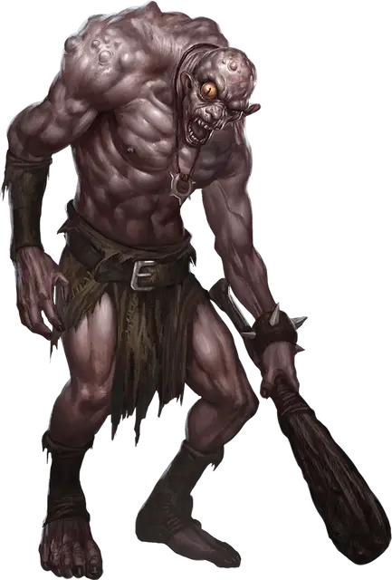

Фомор
Fomorian
Огромный Великан, хаотично-злой

Класс Доспеха 14 (природный доспех)
Хиты 149 (13к12 + 65)
Скорость 30 футов
| мод | спас | ||
|---|---|---|---|
| СИЛ | 23 | +6 | +6 |
| ЛОВ | 10 | +0 | +0 |
| ТЕЛ | 20 | +5 | +5 |
| мод | спас | ||
|---|---|---|---|
| ИНТ | 9 | −1 | −1 |
| МДР | 14 | +2 | +2 |
| ХАР | 6 | −2 | −2 |
Навыки Восприятие +8, Скрытность +3
Чувства тёмное зрение 120 футов, пассивное Восприятие 18
Языки Великаний, Подземный
Опасность 8 (3900 опыта)
Бонус мастерства +3
Среда обитания Подземье
Действия
Мультиатака. Фомор совершает две атаки палицей, либо совершает одну атаку палицей и один раз использует Дурной глаз.
Палица. Рукопашная атака оружием: +9 к попаданию, досягаемость 15 футов, одна цель. Попадание: Дробящий урон 19 (3к8 + 6).
Дурной глаз. Фомор магическим образом заставляет существо, которое видит в пределах 60 футов от себя, совершить спасбросок Харизмы Сл 14. Существо получает урон психической энергией 27 (6к8) при провале, или половину этого урона при успехе.
Проклятье дурного глаза (перезаряжается после короткого или продолжительного отдыха). Пристально уставившись на существо, фомор использует Дурной глаз, но при провале цель также получает проклятье магического уродства. Будучи проклятым, существо уменьшает свою скорость вдвое, и совершает с помехой проверки характеристик, спасброски и атаки, основанные на Силе и Ловкости.
Обезображенное существо может повторять спасброски каждый раз, когда оканчивает продолжительный отдых, оканчивая эффект при успехе.
Описание
Безбожные фоморы — наиболее ужасные и злобные из всех великанов. Их искажённые тела отражают их отвратительные повадки. У некоторых черты лица произвольно расположены на бесформенных, покрытых бородавками головах. Другие обладают разными по размеру конечностями или издают ужасный вой каждый раз, когда втягивают воздух через деформированные рты. Их жалкий внешний вид редко вызывает симпатию, ведь погрязшие во зле, руководящем их сердцами и мыслями, фоморы сами обрекли себя на эту незавидную участь.
Проклятье фей. Эльфы помнят те времена, когда фоморы были наиболее прекрасной из рас, обладателями блестящих умов и непревзойдённых магических способностей. Но это физическое совершенство не распространилось на их сердца, которые снедала жажда магии и могущества.
Фоморы стремились завоевать Страну Фей, поработить её обитателей и подчинить себе их магию. Тогда феи объединились в борьбе за свой План и навели на фоморов ужасное проклятье.
Один за одним падали эти великаны, по мере того, как коверкались их тела, отражая злобу их сердец. Лишённые своей привлекательности и магических сил, эти жалкие уроды бежали подальше от света, закопавшись глубоко под миром, где они вынашивают свою ненависть. Проклиная свою судьбу, с тех пор они готовят месть своим обидчикам-феям.
Великаны Подземья. Фоморы обитают в устрашающе прекрасных пещерах Подземья, редко рискуя подниматься на поверхность. В их пещерах есть доступ к воде, рыбе и грибным лесам, равно как и к существам, чей рабский труд обеспечивает фоморов питанием. Когда же эти рабы слабеют от непосильного труда, их убивают и пожирают. Порочность и злодеяния являются краеугольными камнями общества фоморов, правят которым самые сильные и жестокие из этих великанов. Фоморы отмечают границу своих территорий, используя тела своих врагов - исписывают их кровью стены своих пещер или сшивают части их трупов в глумливой пародии на убитых ими существ.
В гиблом теле злобный дух. Уродство, доставшееся фоморам от проклятья, не даёт им в бою швырять камни, как это делает большинство их родичей-великанов или носить какую-нибудь одежду, кроме обрывков тряпья. Тем не менее, гротескно расположенные на их уродливых лицах носы, уши и глаза дают фоморам превосходные чувства восприятия, что делает почти невозможным застать фомора врасплох или устроить на него засаду.
Жадность и злоба лежат в основе их вырождения и падения, и продолжает изводить их. Фоморы заключают союзы с другими существами, когда им это выгодно, но они бесчестны по своей природе и предают своих союзников по первой же прихоти.
Проклятье дурного глаза. Фоморы могут передавать своё проклятие другим, используя силу сглаза — последний отголосок их некогда превосходных магических способностей. Существо, проклятое дурным глазом фомора, магически деформируется и уродуется, получая лишь намёк на боль и ненависть, поглотившие эту злую расу.